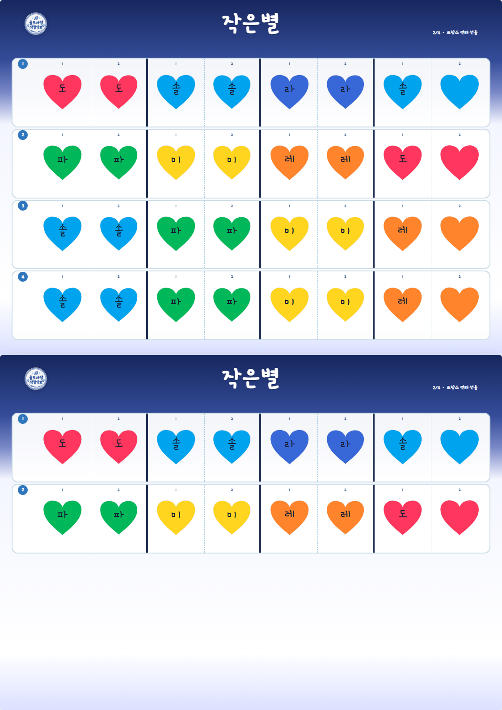
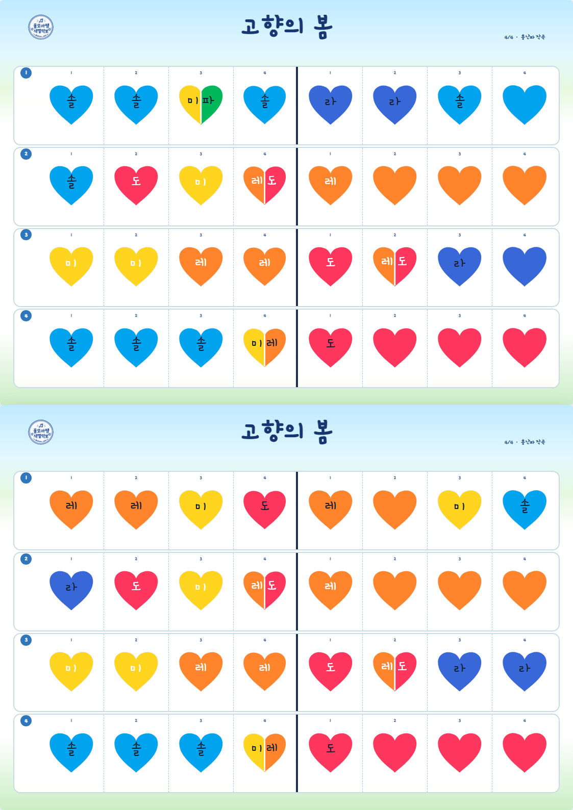
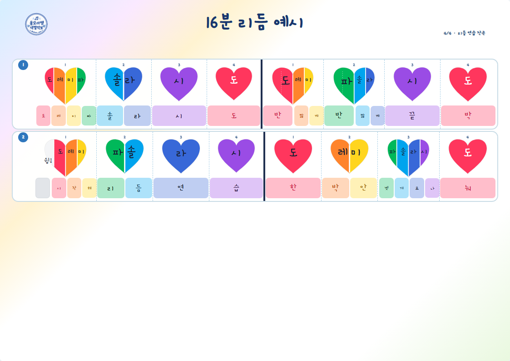
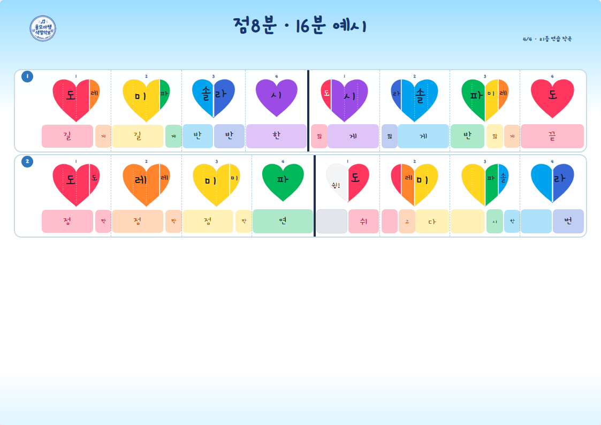

2/4 · 전래 선율 · 계이름
나비야
독일 민요 선율을 계이름 중심으로 정리한 버전.
자료
필요한 걸 골라 꺼내 써요.
가로·세로 각각 PNG와 인쇄용 PDF를 바로 받을 수 있어요. 공개 파일은 권리 확인 가능한 선율과 울모아 제작 리듬 예시부터 올립니다.
독일 민요 선율을 계이름 중심으로 정리한 버전.

프랑스 전래 선율을 계이름 중심으로 정리한 버전.

공개용은 가사를 제외하고 선율·계이름만 담았어요.

0.25박 분할과 네 칸 점선을 익히는 리듬 연습.

0.75박과 0.25박의 길이 차이를 보는 리듬 연습.


같이 연습하기